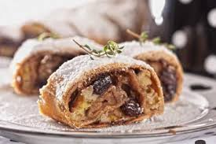
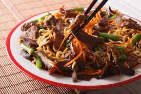

Ceviche! Um dos pratos típicos que mais representa e apresenta a gastronomia peruana para o mundo é o famoso Ceviche. Apesar da simplicidade durante seu preparo, os ingredientes são selecionados para assim proporcionar o sabor suculento e saudável que fazem da iguaria uma das mais famosas do país. Composto basicamente de um bom peixe cortado em pequenos pedaços, mergulhado em uma solução ácida de suco de limão e acrescido de temperos, o alimento é consumido frio e pode ser acompanhado do que você quiser. Além do peixe, muitos outros frutos do mar podem ser usados e o prato deve ser consumido logo após o seu preparo, então, durante sua estadia no Peru não sai sem saborear um majestoso Ceviche.
Chivito! Se você gosta de ir em lugares que vendem hambúrgueres enormes, aqueles do tamanho da sua fome, precisa saborear os famosos Chivitos uruguaios, que consistem em sanduíches recheados com vários ingredientes. Diferente de muitos outros lugares, nos estados dessa região, vendem somente um tipo de chivito, o que oferece aos visitantes diversas opções de recheio e restaurantes especialistas na iguaria, é só escolher em qual irá se deliciar. Os Chivitos são únicos e tipicamente do Uruguai, graças a Antônio Carbonaro que por volta dos anos 40 criou em uma cozinha em Punta Del Leste essa famosa e majestosa iguaria.
Poutine! Trata-se do que podemos dizer ser o prato mais tradicional de todo o Canadá. O poutine foi criado na cidade de Quebec, mas agora se tornou comum ser consumido em todo país. Este prato, originalmente é preparado com batata frita e coalhada de queijo cheddar. Por cima ele ainda é coberto com um molho de carne, conhecido como gravy. No país, alguns restaurantes são especializados no prato, de tão comum que ele se tornou em todo Canadá.
Brownie! O brownie não poderia ficar de fora dessa lista, afinal, essa sobremesa norte-americana também conquistou o coração dos brasileiros. Atualmente, é possível encontrar tal iguaria nos mercados brasileiros, em docerias ou até mesmo com vendedores ambulantes. Entretanto, o brownie é uma comida tipicamente americana.
Strudel!  Uma das receitas folhadas mais conhecidas da Europa, o strudel é uma torta recheada com pedaços pequenos de maçã, passas, canela, migalhas de pão e açúcar polvilhado por cima. Em algumas regiões da Alemanha, como em Frankfurt, é comum encontrar receitas que acrescentam rum para potencializar seu sabor. Uma verdadeira especiaria alemã!
Yakisoba!  O termo yakissoba (yaki = assar, grelhar, soba = macarrão), refere-se normalmente ao sauce yakisoba, isto é, um prato muito simples, feito de macarrão refogado com legumes e carnes, temperados com um molho específico (sauce), com sabor similar ao molho inglês, porém mais espesso. Apesar de sua origem chinesa, o yakissoba criou raízes no Japão e, atualmente, é tão popular, que aparece obrigatoriamente em festas populares de rua, nos supermercados ou lojas de conveniência, nos tradicionais obentô (refeições prontas), e é uma prática e saborosa opção de cardápio nos lares japoneses.
Guacamole! O guacamole é uma iguaria típica da culinária mexicana, servida com uma grande variedade de pratos e no geral vai junto com pico-de-gallo e sour cream. O prato parece um purê de abacate ou avocado bem temperado, que funciona como um complemento da salada, tendo sido exportado para todas as partes do mundo onde existe comida mexicana, mesmo que esta seja alterada de acordo com os gostos locais.